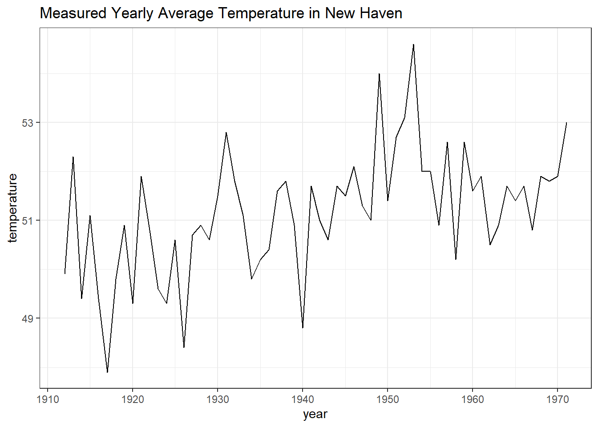
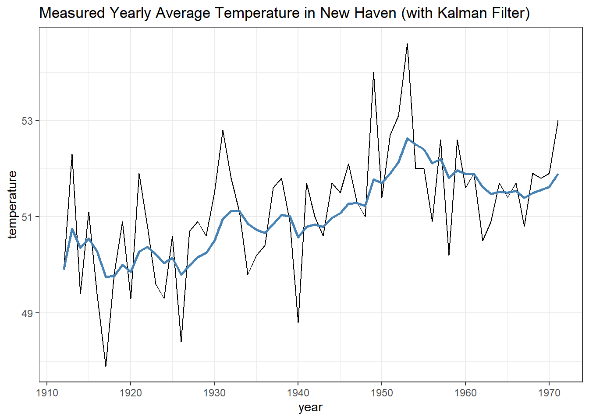
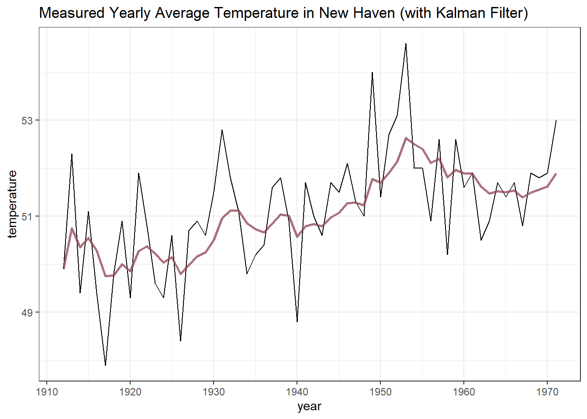
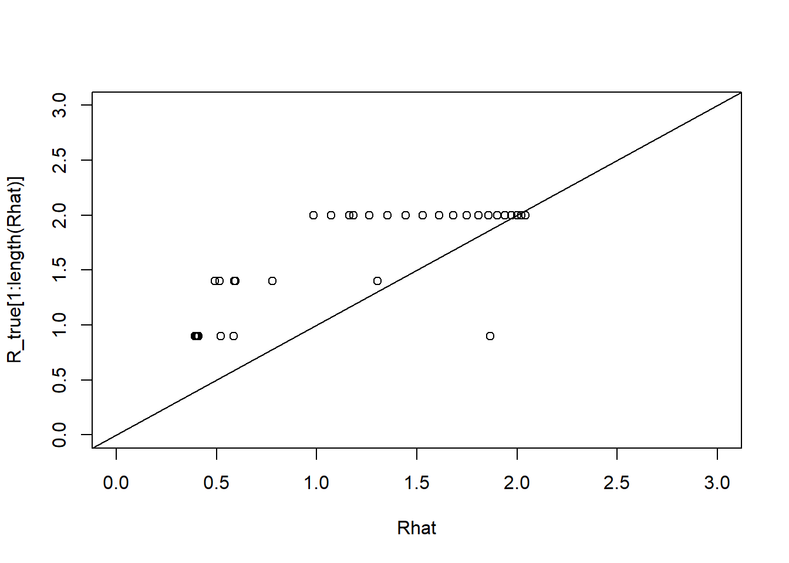

library(ggplot2)
library(FKF)Kalman filter
Load packages
nhtempTime Series:
Start = 1912
End = 1971
Frequency = 1
[1] 49.9 52.3 49.4 51.1 49.4 47.9 49.8 50.9 49.3 51.9 50.8 49.6 49.3 50.6 48.4
[16] 50.7 50.9 50.6 51.5 52.8 51.8 51.1 49.8 50.2 50.4 51.6 51.8 50.9 48.8 51.7
[31] 51.0 50.6 51.7 51.5 52.1 51.3 51.0 54.0 51.4 52.7 53.1 54.6 52.0 52.0 50.9
[46] 52.6 50.2 52.6 51.6 51.9 50.5 50.9 51.7 51.4 51.7 50.8 51.9 51.8 51.9 53.0data <- data.frame(x = seq(from = 1912, to = 1971, by = 1),
y = as.numeric(nhtemp))
ggplot(data, aes(x = x, y = y)) +
geom_line() +
xlab("year") + ylab("temperature") +
ggtitle("Measured Yearly Average Temperature in New Haven") +
theme_bw()
y <- nhtemp
a0 <- y[1]
P0 <- matrix(1)
dt <- ct <- matrix(0)
Zt <- Tt <- matrix(1)# Estimate parameters:
fit.fkf <- optim(c(HHt = var(y, na.rm = TRUE) * .5,
GGt = var(y, na.rm = TRUE) * .5),
fn = function(par, ...)
-fkf(HHt = matrix(par[1]), GGt = matrix(par[2]), ...)$logLik,
yt = rbind(y), a0 = a0, P0 = P0, dt = dt, ct = ct,
Zt = Zt, Tt = Tt)
# recover values
HHt <- as.numeric(fit.fkf$par[1])
GGt <- as.numeric(fit.fkf$par[2])
HHt; GGt[1] 0.05051545[1] 1.032562y_fkf <- fkf(a0, P0, dt, ct, Tt, Zt,
HHt = matrix(HHt), GGt = matrix(GGt),
yt = rbind(y))data <- data.frame(x = seq(from = 1912, to = 1971, by = 1),
y = as.numeric(nhtemp),
y_kalman = as.numeric(y_fkf$att))
ggplot(data, aes(x, y)) +
geom_line() +
geom_line(aes(x, y_kalman), col = "steelblue", linewidth=1) +
xlab("year") + ylab("temperature") +
ggtitle("Measured Yearly Average Temperature in New Haven (with Kalman Filter)") +
theme_bw()
# ggsave("kalman_filter.png", plot=p)# initialize
theta <- theta_var <- rep(NA, length(y) + 1)
# set our initial guess
theta[1] <- a0
theta_var[1] <- P0
# define parameters (notation consistent with Equation 11).
sigma_w <- sqrt(HHt)
sigma_v <- sqrt(GGt)
G_t <- Tt
F_t <- Zt
# iterate and make estimates
for (i in 1:length(y)) {
# Equation 6.
# use previous theta value for theta_hat and calculate e_t
theta_hat <- theta[i]
e_t <- y[i] - theta_hat * G_t * F_t
# calculate R_t
R_t <- G_t * theta_var[i] * G_t + sigma_w ^ 2
# generate estimates from Equation 11
theta[i + 1] <- G_t * theta_hat + R_t * F_t * (sigma_v ^ 2 + F_t ^ 2 * R_t) ^ (-1) * e_t
theta_var[i + 1] <- R_t - R_t * F_t * (sigma_v ^ 2 + F_t ^ 2 * R_t) ^ (-1) * F_t * R_t
}
# adjust by one
theta <- theta[-1]
theta_var <- theta_var[-1]data <- data.frame(x = seq(from = 1912, to = 1971, by = 1),
y = as.numeric(nhtemp),
y_kalman = as.numeric(y_fkf$att),
y_algebra = theta)
ggplot(data, aes(x = x, y = y)) +
geom_line() +
geom_line(aes(x, y_kalman), col = "steelblue", linewidth = 1, alpha= 1 / 2) +
geom_line(aes(x, y_kalman), col = "firebrick", linewidth = 1, alpha = 1 / 2) +
xlab("year") + ylab("temperature") +
ggtitle("Measured Yearly Average Temperature in New Haven (with Kalman Filter)") +
theme_bw()
Infection time series
Generate infection times based on the SIR model in which \(R_t\) varies First define Rt, which is the same as used in the prior study
Let’s develop a SIR model as was used in my previous post
library(diffeqr)
de <- diffeqr::diffeq_setup()
sir_julia <- function(u, p, t){
N = sum(u[1:3])
R = ifelse(t < 20, 2, ifelse(t < 40, 0.9, 1.4))
p[1] = R * p[2]
du1 = - p[1]*u[1]*u[2]/N
du2 = + p[1]*u[1]*u[2]/N - p[2]*u[2]
du3 = + p[2]*u[2]
du4 = + p[1]*u[1]*u[2]/N
return(c(du1,du2,du3,du4))
}
u0 <- c(0.99, 0.01, 0.0, 0.0)
tspan <- c(0.0, 50.0)
p <- c(0.4, 0.2)
prob <- de$ODEProblem(sir_julia, u0, tspan, p)
# prob_jit <- diffeqr::jitoptimize_ode(de, prob)
sol <- de$solve(prob, de$Tsit5(), saveat=1)
mat <- sapply(sol$u, identity)
udf <- as.data.frame(t(mat))
tudf <- cbind(data.frame(t=sol$t), udf)
ggplot(tudf, aes(x=t)) +
geom_line(aes(y=V1, color="S")) +
geom_line(aes(y=V2, color="I")) +
geom_line(aes(y=V3, color="R")) +
scale_color_manual("",
values=c("S"="steelblue", "I"="firebrick",
"R"="darkgreen"))+
labs(y="Number of individuals", x="Time", color="")
gamma <- p[2]
I <- diff(tudf$V4)
# <- rpois(length(thetat), 100000*thetat)
n <- length(I)
rt <- (I[2:n]-I[1:(n-1)])/I[1:(n-1)]
t <- 1:100
R_true <- ifelse(t < 20, 2, ifelse(t < 40, 0.9, 1.4))
Rhat <- rt/gamma + 1
plot(Rhat, R_true[1:length(Rhat)], xlim=c(0,3), ylim=c(0,3), )
abline(a=0,b=1)
\[\frac{I_t-I_{t-1}}{I_{t-1}}\equiv r_t = \gamma(R_t-1) + \epsilon_i\] \[R_t = R_{t-1} + \eta_i\]